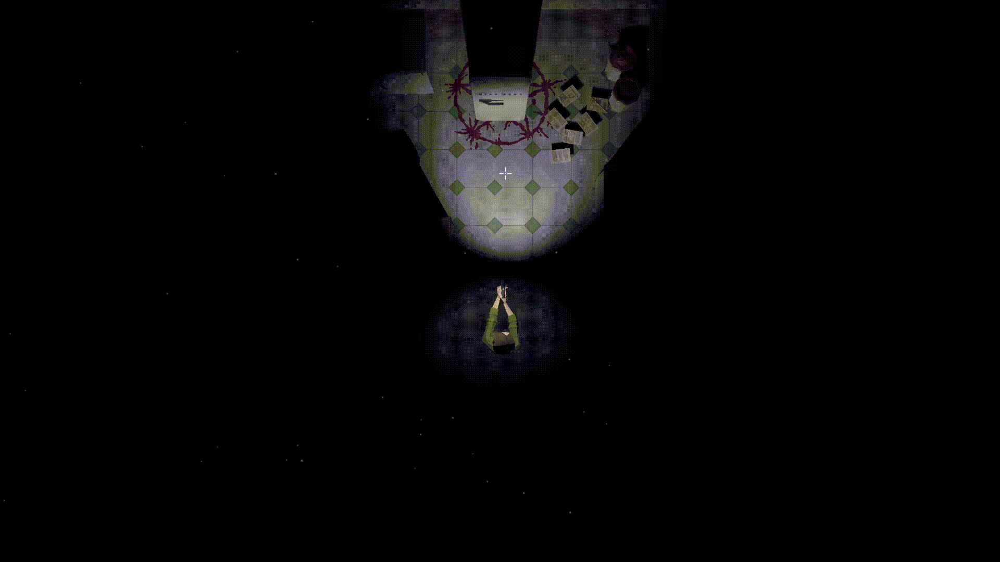
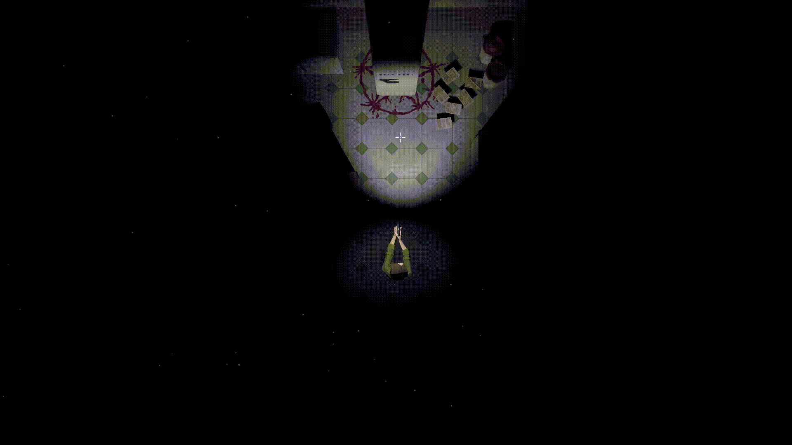

Szulc Adrian
Gdańsk, Poland · +48 698 197 177 ·
szulc.adrian@onet.pl
I am experienced in Continuous Integration (CI) and Continuous Delivery (CD) frameworks, although I love making games and that's my career goal.
Skills
Programming Languages & Tools
Links
Experience
Graphic Software Engineer (CI/CD)
Intel Corporation
- Main CI support side for one of major components.
- Main CI owner of major platform resolving various testing difficulties.
- Improved process of changing Test Planning workflow with Python scripts.
- Reached out to other teams for cooperation with resolving common issues.
- Finding possible solution for incoming/potential problems.
May 2021 - September 2023
Graphics Software Engineer Intern
Intel Corporation
- Optimized project build time by 17%.
- Automated internal tool for dumping command buffers.
- Identified and addressed memory leaks.
- Developed debug tools and benchmarks.
- Performed manual game testing.
September 2019 - May 2021
Education
Gdańsk University of Technology
Engineer's degree in Computer Science
Thesis: 2.5D game written in OpenGL
October 2017 - February 2021
Games
Yet Another Dream (Unity)
Ongoing project oriented towards recreating IntoTheBreach turn-based combat. Learning more about code architecture is the main goal for this project.
 


Interests
Apart from being a software engineer, I enjoy playing games and taking apart their mechanics to reimplement them myself. I was always curious how were games made.
In my free time I enjoy reading number of fantasy and self-development books. I am an amateur guitarist and I spend a lot of time gaming.